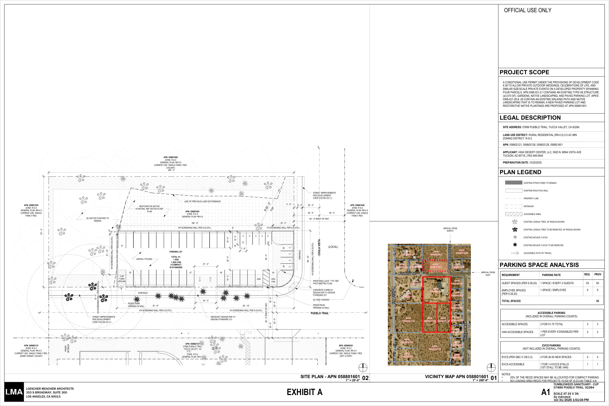

Five comparable views: existing site, daytime alternative, night with low bollards, the same alternative at night with the architect’s lights, and the original submitted plan in daylight. Switch between Layers 2 and 5 to compare the designs without changing the camera. This is an illustrative 3D study; existing buildings and vegetation remain simplified, not a photorealistic reconstruction.
What is grounded
- Four sanctuary parcels and the adjoining residence parcel.
- North lot: 290 × 131 ft; 41 proposed parking spaces.
- Original parking footprint and stall positions retained without shifting; 30 standard, 9 compact and 2 accessible spaces.
- 24 ft driveway location from A1. Existing Joshua tree positions retained.
- Nine pole-mounted fixtures at 8 ft mounting height, from sheet C1.
- Residence footprint from county GIS; building heights from the county’s 2021 dataset.
Original submitted plan — Layer 5
Restores the earlier submitted-plan design: dark asphalt, 4–6 ft screening walls, 6-ft concrete sidewalks, curb frontage and street widening, concrete driveway apron, native restoration, and nine 8-ft pole fixtures in the original C1 positions. The original and alternative share the same 41-space footprint and stall coordinates, retained Joshua tree positions, shared comparison cameras, and optional cars. Layer 5 includes the finished parking grades, ribbon gutter, ditch and basin grate from Figure 3-4 even when the explanatory drainage overlay is off. Layer 5 is a daytime view; the alternative’s steel fence, berms, sliding gate and bollards are hidden.
Screening walls and street frontage are simplified from A1 and the earlier model. Streetlight locations are not resolved in this model; C1 excludes street-lighting calculations. The plan is shown as submitted, not as approved.
Drainage overlay — Layer 5
The optional overlay follows Figure 3-4 (Grading Plan, PDF page 37) and the drainage description on printed page 23 of the public-review IS/MND. It shows the 3-ft concrete ribbon gutter, west-side ditch, 36-inch Brooks catch basin, 6-inch pipe to an underground drywell, and 4-inch overflow to a parkway drain. All buried components appear in an x-ray view; blue arrows show intended routing, not a rainfall or hydraulic simulation.
Catch-basin grate elevation: 3362.00 ft; pipe invert: 3361.00 ft. The drywell callout is 3358.00 INV; the outlet-to-parkway callout is 3360.90 INV. The one-foot grate-to-pipe interval does not establish full basin depth. The drywell references Town Standard Drawing 473 and is represented by an amber wire symbol, not a sized storage tank. Its diameter, full depth and capacity are not specified in Figure 3-4. The 6-inch and 4-inch pipe diameters are modeled to scale; their routes and profiles are explanatory.
Layer 5’s finished surface is interpolated between north-edge, stall-edge, ribbon-gutter and south-edge spot elevations in Figure 3-4, with datum 3362.00 ft and no vertical exaggeration. The parking rows fall west and crossfall toward the ribbon gutter; the west ditch falls south through 3362.50, 3362.40, 3362.30 and 3362.20 to the 3362.00 catch-basin grate. Cars, markings, walls and fixtures follow the graded surface. Civil spot locations are approximately aligned to the retained architectural footprint; intermediate points are interpolated. The ground beneath and around the pavement follows the graded surface so paving, planting and frontage remain grounded. Outside the parking footprint, the north parcel follows a plane fitted to the 35 verified USGS 3DEP ground samples (1-meter CA_SE_Fault_Zone_2017 lidar). That plane is approximately aligned to the architectural frame; context outside the north parcel is blended into the earlier model. Street and boundary tie-ins remain illustrative, not engineered profiles or earthwork quantities. The report’s “8-foot concrete ditch” wording does not resolve its cross-section in this reproduced figure, so the displayed ditch width remains schematic. Ditch/wall coordination, pipe profiles and hydraulic capacity remain unresolved. Turning off the overlay hides the arrows and underground symbols; the finished grades stay visible. Layers 1–4 retain their earlier parking geometry. Existing road conditions are updated in every layer.
Read the grading drawing and environmental report ↗
Alternative design
Layers 2–4 use tan-tinted asphalt, a solid weathered-steel fence on the north and west, a 4-ft step-down near Pueblo Trail, and a rounded 3-ft earth berm with a 14-ft base on the south and east. New native planting is illustrative. There are no new curbs, gutters, sidewalks or streetlights. The existing roads and sanctuary remain in place.
The driveway gate uses the open rectangular steel framing in reference photo IMG_0754, with two 12-ft sliding leaves at the driveway opening just inside the berm. The entrance is plant-free tan asphalt continuous with the parking surface. It closes in Layer 2 and slides aside in Layers 3–4. No 20-ft setback is assumed; no parking footprint, stall or Joshua tree coordinates have been moved. Gate structure, storage clearance, accessibility, drainage and pedestrian routing require design review. The crossing is proposed and subject to Town Engineer approval.
Lighting comparison — not a photometric study
Layers 3 and 4 share the same camera, exposure, sky, optional 25 cars, four pedestrians, open gate, surface, fence, berm and planting. Only the fixture system changes; the Show cars setting carries across all five views. Layer 3 has 18 low 3.5-ft bollards along stall-divider lines at the parking edges and beside pedestrian access, assumed 2700K and 15 W LED each, with expanded downward light pools. Two stand beside the pedestrian opening and one at the east row. The stated operating schedule is lights off 30 minutes after events; this website does not control real lights.
Layer 4 retains the nine-fixture arrangement and 8-ft mounting height from C1: four north, four south and one east. Poles have been aligned with stall dividers at the parking edges to keep spaces clear. Fixture shapes and warm-white color are shown for comparison. C1 calls for about 1 fc minimum average illumination and explicitly describes its photometric values as preliminary. The rendered light levels are artistic comparisons, not calculated foot-candles. Shielding and shadows illustrate the intent to contain light; no zero-spill, safety or code-compliance conclusion can be drawn without final fixture photometry, grading and an engineered lighting calculation.
Uploaded architectural plans
Loescher Meachem Architects · sheets dated October 31, 2025; C1 dated November 3, 2025. The proposal is shown as submitted in this file, not as an approved design.
Open original 9-page PDF ↗
Photo references
Uploaded site photos inform building colors, fencing, vegetation and the open-lot appearance.
Supplemental data
State project record · County parcel geometry · County 2021 building geometry
Layer 5 always shows the proposed parking grades from Figure 3-4. The north-parcel terrain in Layer 5 uses the verified USGS slope; surrounding context is simplified. Layers 1–4 retain level parking geometry; the road washout is recessed in every layer. This model does not establish grading, legal boundaries, drainage, noise, or light trespass. County and plan boundaries differ slightly; the architectural plans control the sanctuary layout.